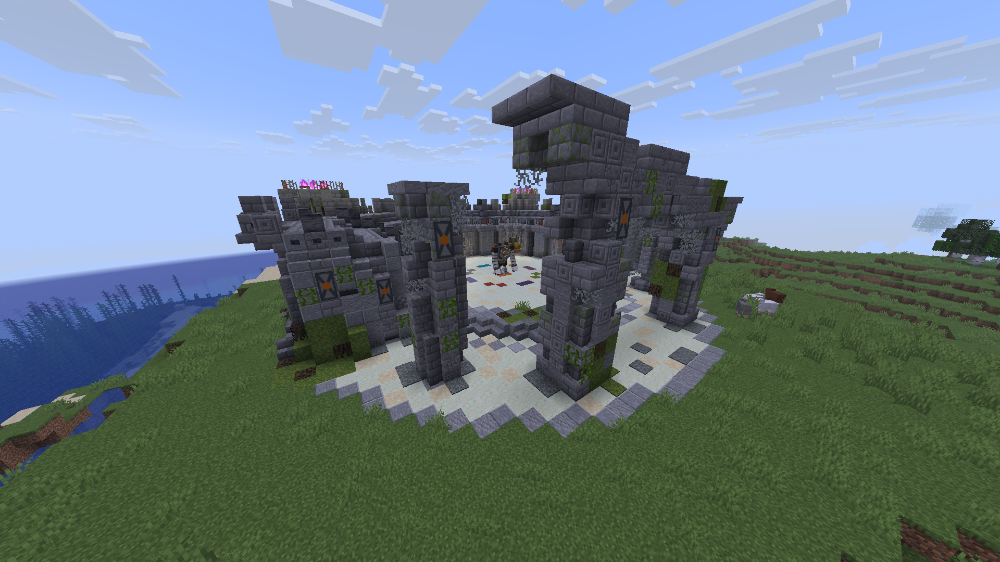
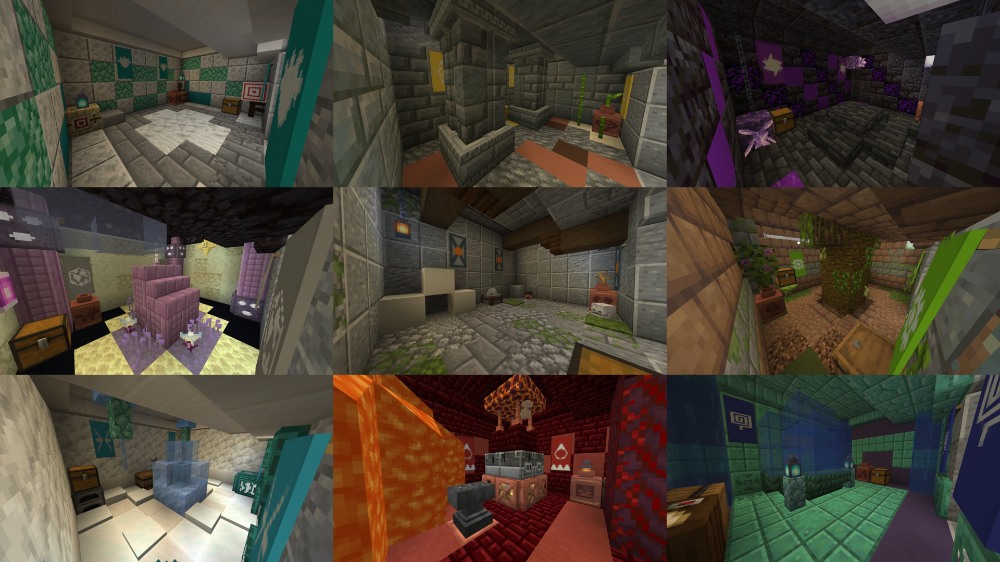
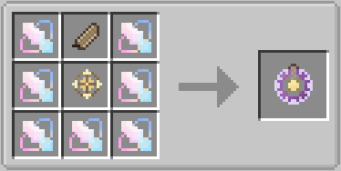
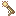
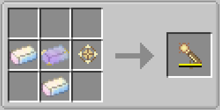

GILE DOCUMENTATION
Ancient Ruins & Ruin Guard
Discover Ancient Ruins, defeat the Ruin Guard, and find your way to the Moon (Outer End Islands).

1. Ancient Ruins
The Ancient Ruins structure can generate anywhere on the Overworld surface. It is the primary mid-game dungeon of the mod and your alternative gateway to the End dimension.
Structure Layout & Loot
The ruins consist of one Central Boss Arena and up to 5 randomly generated side rooms. Note that some side rooms have a chance to not generate at all, making every ruin slightly different!
- Every side room (except closed) have one decorated pot, barrel and chest.
- Pots contain one elemental bundle with some of special elemental item.
- Barrels contain ruined junk, some primogems, corresponding sigils and another special elemental item.
- Chests loot is based on one of the 8 elements, pulling from vanilla structures loot tables.

Three rows from left to right: Anemo, Geo, Electro; Luna, Closed, Dendro; Cryo, Pyro, Hydro elemental room types.
Special Elemental Loot Pools:
| Type | Pot Loot | Barrel Special item | Chest Loot Table |
|---|---|---|---|
| Closed | stone_axe | - | - |
| Anemo | phantom_membrane | wind_charge | trial_chambers/entrance |
| Geo | pointed_dripstone | smooth_sandstone | desert_pyramid |
| Electro | amethyst_shard | copper_ingot | ancient_city |
| Dendro | flowering_azalea | big_dripleaf | jungle_temple |
| Hydro | prismarine_crystal | prismarine_shard | shipwreck_treasure |
| Pyro | gunpowder | fire_charge | ruined_portal |
| Cryo | snow_layer | ice | igloo_chest |
| Luna | ADDALINKgilemod:dust | end_stone | end_city_treasure |
2. The Ruin Guard (Mini-Boss)
The central arena of the Ancient Ruins houses the Ruin Guard. This formidable mechanical foe adapts its attacks based on how far away you are.
3. Cogwork Core
Defeating the Ruin Guard gives you a rare chance to obtain a Cogwork Core. This item is critical for crafting two highly overpowered utility items: the Nuclear Cannon and the End Compass. The Phanes Blade can be crafted too
Use the End Compass to teleport directly toward the End at your current Overworld X and Z coordinates.

End CompassUsing the Ender Compass teleports you directly to the End dimension at your exact Overworld coordinates (X and Z). The compass algorithm ensures you never spawn in the void by searching for a safe block within an 8-chunk radius. If no safe block is found, it returns an error.
- Bypassing the Dragon: If your X or Z coordinates in the Overworld are close to 1000 or greater, the compass will safely teleport you to the Outer End Islands (The Moon).
- Warning System: The compass emits a warning if your coordinates will land you on the Main End Island, allowing you to prepare before accidental teleportation.

Use the End Compass to create a ray of radiation that burns mob and destroys blocks.

Nuclear CannonUsing it emits a pretty short, but powerful ray of radiation. It destroys every block in it's way, burns entities and occasionnaly causes explosions. Durability is not very high however and needs to be repaired with cogwork core when on low ammo.
Looking for details on the new flora, moon terrains, and ambient mobs? Head over to the Biomes Documentation →